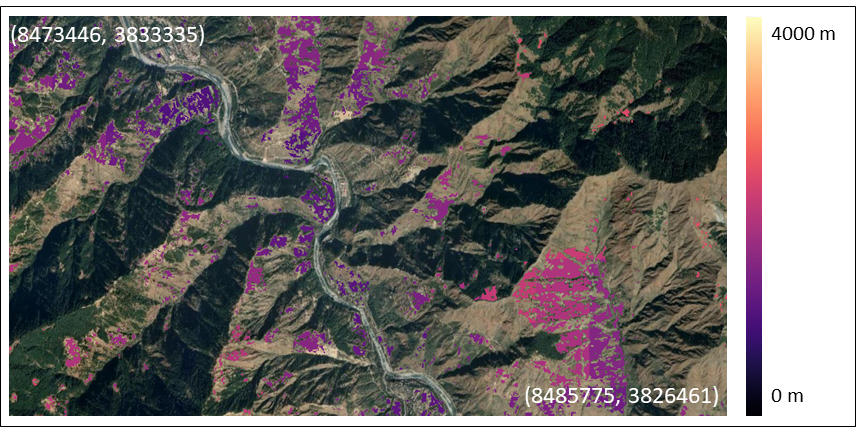

Publications

Understanding and Predicting Human Behavior in Interactions with Autonomous Systems in Urban Environments: A Systematic Review, Challenges, and Opportunities
Transportation Research Part F: Traffic Psychology and Behaviour 114: 270-307, 2025
A comprehensive review of 99 articles identifying technical and methodological research gaps in human-AV interaction prediction across scalability, criticality, versatility, adaptability, and generalizability with suggested actionable directions for advancing.

TwoResNet: Two-Level Resolution Neural Network for Traffic Forecasting of Freeway Networks
IEEE Intelligent Transportation Systems Conference (ITSC), 2022 | Extended version: Scientific Reports 14.1: 31624, 2024
A two-level resolution architecture decomposing spatio-temporal traffic correlations into low and high-resolution blocks that explain general changes and details of traffic speed. The journal extension adds enhanced interpretability analysis for multi-scale freeway traffic prediction.

Using Machine Learning to Generate an Open-Access Cropland Map from Satellite Images Time Series in the Indian Himalayan Region
Remote Sensing Applications: Society and Environment 32: 101057, 2023
A machine learning pipeline for cropland detection from satellite image time series, applied to the Indian Himalayan region.

Motion Style Transfer: Modular Low-Rank Adaptation for Deep Motion Forecasting
Conference on Robot Learning (CoRL), 2022
A low-rank motion style adapter that efficiently transfers pre-trained forecasting models to new domains, updating less than 5% extra parameters while outperforming full fine-tuning. Our modular adapter strategy that disentangles the features of scene and motion allows for more efficient adaptation to new transportation modes.